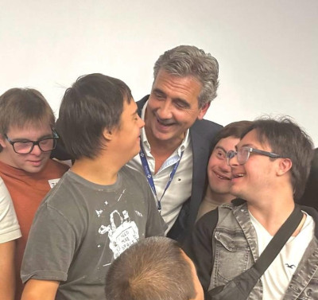

¡Unidos por la inclusión!

El viernes 2 de mayo, nuestro centro de salud fue sede de una jornada muy especial organizada por familias de Chivilcoy, con el objetivo de fortalecer la red de familias de jóvenes y niños con síndrome de Down.
Madres, padres y familias compartieron experiencias, preguntas, desafíos y esperanzas.
¡Nos alegra haber sido parte de este encuentro que teje redes de inclusión, acompañamiento y comunidad!